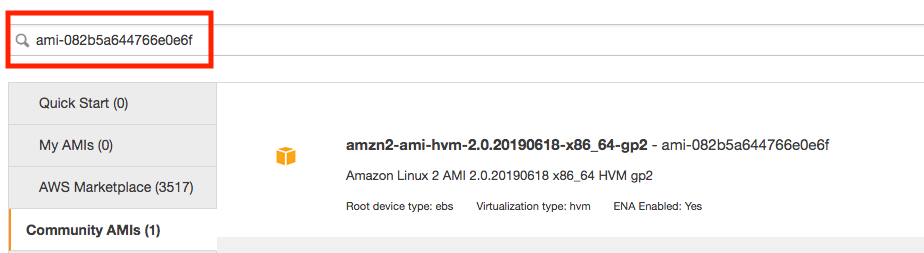
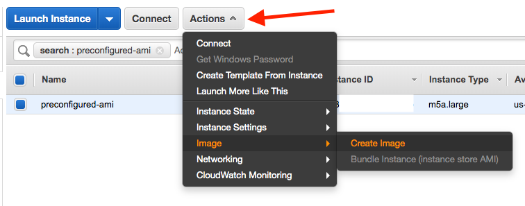
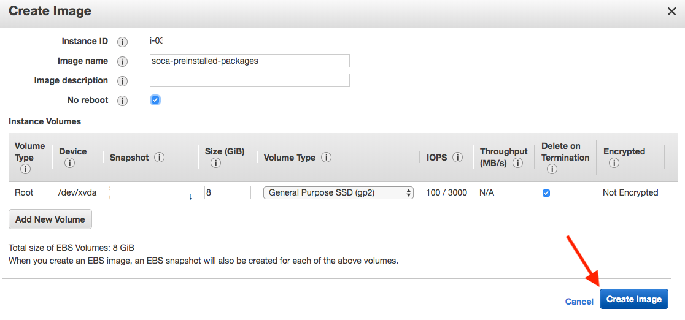
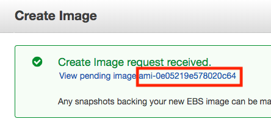
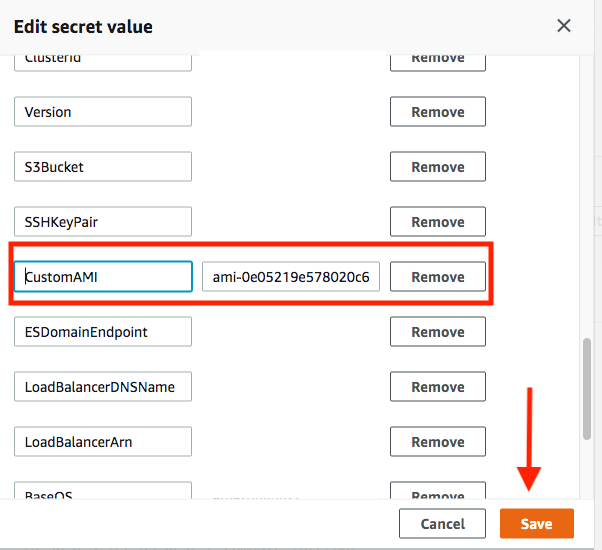

Import custom AMI to provision capacity faster
By default, SOCA provision a vanilla AMI and install all required packages in ~3 to 5 minutes. If this cold time is not acceptable for your workload, you can launch AlwaysOn instance or pre-bake your AMI with all required libraries.
Step 1: Locate your base AMI¶
Run cat /etc/environment | grep SOCA_INSTALL_AMI on your scheduler host
$ ssh -i <key> ec2-user@<ip>
Last login: Wed Oct 2 20:06:47 2019 from <ip>
_____ ____ ______ ___
/ ___/ / __ \ / ____// |
\__ \ / / / // / / /| |
___/ // /_/ // /___ / ___ |
/____/ \____/ \____//_/ |_|
Cluster: soca-uiupdates
> source /etc/environment to SOCA paths
[ec2-user@ip-30-0-1-28 ~]$ cat /etc/environment | grep SOCA_INSTALL_AMI
export SOCA_INSTALL_AMI=ami-082b5a644766e0e6f
[ec2-user@ip-30-0-1-28 ~]$
Step 2: Launch a temporary EC2 instance¶
Launch a new EC2 instance using the SOCA_INSTALL_AMI image

Step 3: Pre-configure your AMI¶
Important
Step 3 is only required if you want to reduce the time required for your compute node to boot. You can skip this section if you just want to install your customization on your AMI and let SOCA handles PBS/Gnome/System packages installation.
3.1 Pre-Install system packages¶
You can pre-install the packages listed on https://github.com/awslabs/scale-out-computing-on-aws/blob/main/source/scripts/config.cfg. You will need to run yum install for:
- SYSTEM_PKGS
- SCHEDULER_PKGS
- OPENLDAP_SERVER_PKGS
- SSSD_PKGS
Easy Install
- Copy the content of the
config.cfgon your filesystem (say/root/config.cfg) - Run
source /root/config.cfg - Run the following commands:
yum install -y $(echo ${SYSTEM_PKGS[*]})yum install -y $(echo ${SCHEDULER_PKGS[*]})yum install -y $(echo ${OPENLDAP_SERVER_PKGS[*]})yum install -y $(echo ${SSSD_PKGS[*]})
Here is an example of how you can install packages listed in an array in bash.
3.2: Pre-Install the scheduler¶
To reduce the launch time of your EC2 instance, it's recommended to pre-install OpenPBS. First, refer to https://github.com/awslabs/scale-out-computing-on-aws/blob/main/source/scripts/config.cfg and note all OpenPBS related variables as you will need to use them below (see highlighted lines):
# Sudo as Root
sudo su -
# Define OpenPBS variable
export OPENPBS_URL=<variable_from_config.txt> # ex https://github.com/openpbs/openpbs/archive/v20.0.1.tar.gz
export OPENPBS_TGZ=<variable_from_config.txt> # ex v20.0.1.tar.gz
export OPENPBS_VERSION=<variable_from_config.txt> # ex 20.0.1
# Run the following command to install OpenPBS
cd ~
wget $OPENPBS_URL
tar zxvf $OPENPBS_TGZ
cd openpbs-$OPENPBS_VERSION
./autogen.sh
./configure --prefix=/opt/pbs
make -j6
make install -j6
/opt/pbs/libexec/pbs_postinstall
chmod 4755 /opt/pbs/sbin/pbs_iff /opt/pbs/sbin/pbs_rcp
systemctl disable pbs
Installation Path
Make sure to install OpenPBS under /opt/pbs
3.3: (Optional) Pre-Install Gnome¶
-
If you are using
RHEL, runyum groupinstall "Server with GUI" -y -
If you are using
Centos, runyum groupinstall "GNOME Desktop" -y -
If you are using
Amazon Linux, runyum install -y $(echo ${DCV_AMAZONLINUX_PKGS[*]})
3.4: Reboot your EC2 machine¶
3.5: Make sure you do not have any libvirt of firewalld/iptables¶
Post reboot, some distribution may automatically start libvirt or firewall. If that's the case you must delete them otherwise PBS won't be able to contact the scheduler.
To find if you have a running libvirt, run ifconfig and check if you have virbr0 interface such as:
ifconfig
ens5: flags=4163<UP,BROADCAST,RUNNING,MULTICAST> mtu 9001
inet 10.10.2.19 netmask 255.255.255.0 broadcast 10.10.2.255
inet6 fe80::8b1:6aff:fe8a:5ad8 prefixlen 64 scopeid 0x20<link>
ether 0a:b1:6a:8a:5a:d8 txqueuelen 1000 (Ethernet)
RX packets 81 bytes 11842 (11.5 KiB)
RX errors 0 dropped 0 overruns 0 frame 0
TX packets 92 bytes 12853 (12.5 KiB)
TX errors 0 dropped 0 overruns 0 carrier 0 collisions 0
lo: flags=73<UP,LOOPBACK,RUNNING> mtu 65536
inet 127.0.0.1 netmask 255.0.0.0
inet6 ::1 prefixlen 128 scopeid 0x10<host>
loop txqueuelen 1000 (Local Loopback)
RX packets 8 bytes 601 (601.0 B)
RX errors 0 dropped 0 overruns 0 frame 0
TX packets 8 bytes 601 (601.0 B)
TX errors 0 dropped 0 overruns 0 carrier 0 collisions 0
virbr0: flags=4099<UP,BROADCAST,MULTICAST> mtu 1500
inet 192.168.122.1 netmask 255.255.255.0 broadcast 192.168.122.255
ether 52:54:00:ea:5a:b9 txqueuelen 1000 (Ethernet)
RX packets 0 bytes 0 (0.0 B)
RX errors 0 dropped 0 overruns 0 frame 0
TX packets 0 bytes 0 (0.0 B)
TX errors 0 dropped 0 overruns 0 carrier 0 collisions 0
If that's the case, disable libvirt by running
/bin/systemctl disable libvirtd.service
ip link set virbr0 down
brctl delbr virbr0
Then, make sure you do not have iptables (iptables -L) running. If needed, disable firewalld by running /bin/systemctl disable firewalld
3.6: Create soca_preinstalled_packages.log¶
Create an empty file located at /root/soca_preinstalled_packages.log for example, run touch /root/soca_preinstalled_packages.log. This would enable compute node initialization scripts to skip the installation of all the required packages since these are now pre-installed in the AMI.
Step 4: Create your AMI¶
Once you are done, go back to EC2 console, locate your instance and click "Actions > Image > Create Image" 
Choose an AMI name and click 'Create Image'. 
Your AMI is now being created. Please note it may take a couple of minutes for the AMI to be ready. To check the status, go to EC2 Console and then click "AMIs" on the left sidebar 
Stop your temporary EC2 instance
Once your AMI has been created, you can safely terminate the EC2 instance you just launched as you won't need it anymore.
Step 5: Test your new AMI¶
# Test 1: Submit a job with a vanilla AMI
$ qsub -l instance_type=c5.9xlarge -- /bin/date
# Test 2: Submit a job with a pre-configured AMI
$ qsub -l instance_type=c5.9xlarge -l instance_ami=ami-0e05219e578020c64 -- /bin/date
Results:
- Test1 (Vanilla): 3 minutes 45 seconds to provision EC2 capacity, register node on SOCA and start the job
- Test2 (Pre-Configured): 1 minute 44 seconds to provision EC2 capacity, register host on SOCA and start the job
Step 6: Update default AMI (Optional)¶
Single job¶
As you are planning to use a custom AMI, you will be required to specify -l instance_ami=<IMAGE_ID> at job submission.
It's recommended to go with the "Entire Queue" option below if you do not want to manually specify this resource each time you submit a job
Entire queue¶
Edit /apps/soca/$SOCA_CONFIGURATION/cluster_manager/settings/queue_mapping.yml and update the default AMI
queue_type:
compute:
queues: ["queue1", "queue2", "queue3"]
instance_ami: "<YOUR_AMI_ID>" # <- Add your new AMI
instance_type: ...
Any jobs running in the queue configured on the queue_mapping will now use your pre-configured AMI by default. You do not need to specify -l instance_ami at job submission anymore.
Entire cluster¶
If you want to change the default AMI to use regardless of queue/job, open your Secret Manager console and select your Scale-Out Computing on AWS cluster configuration. Click “Retrieve Secret Value” and then “Edit”. Find the entry “CustomAMI” and update the value with your new AMI ID then click Save
